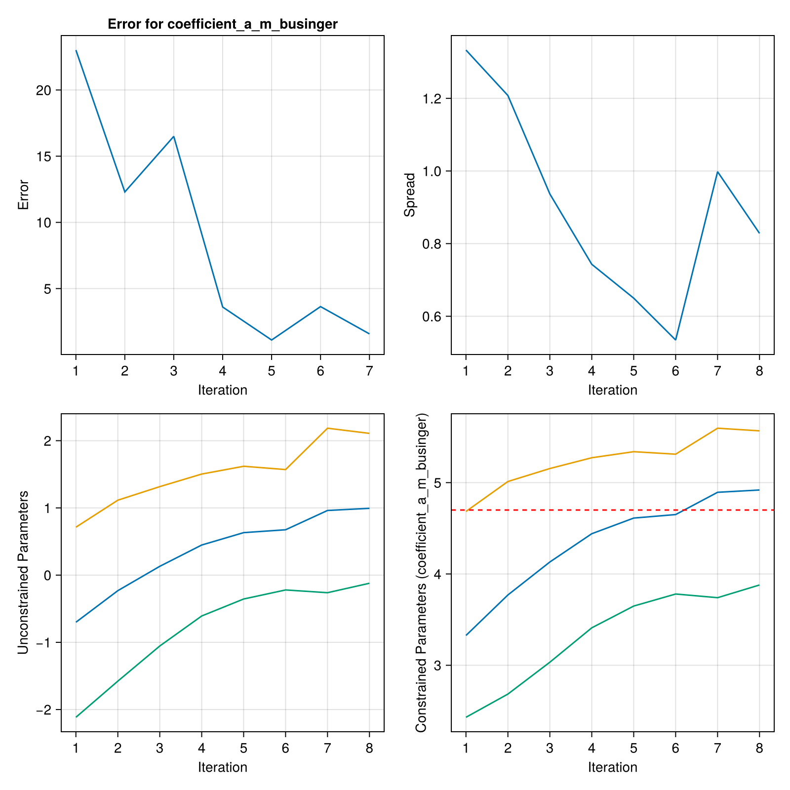
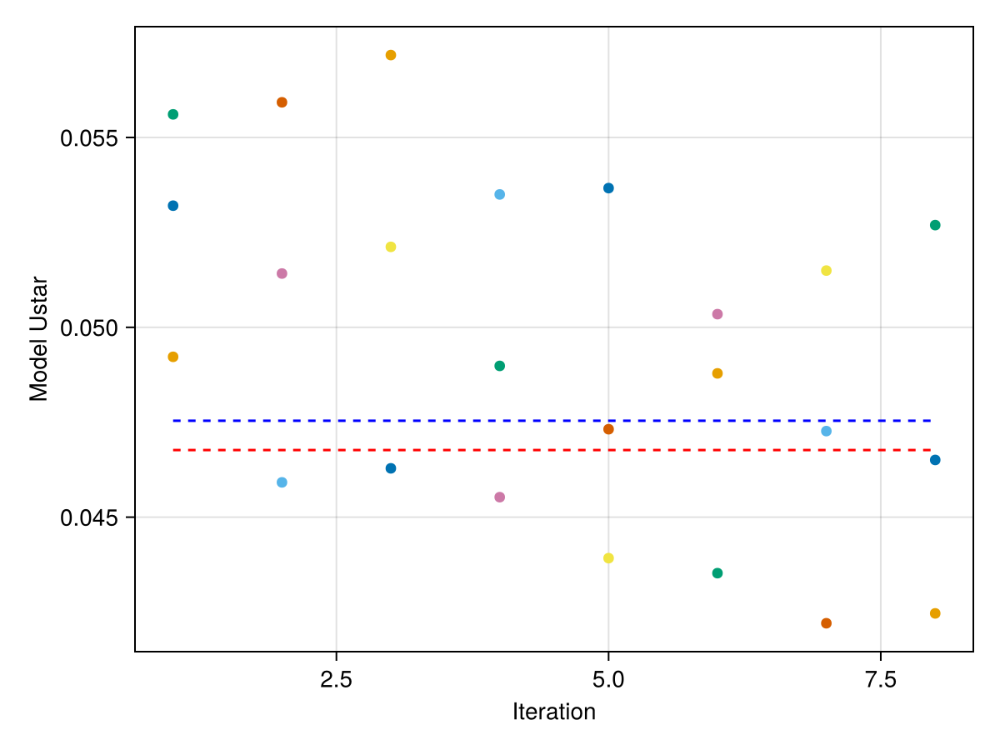
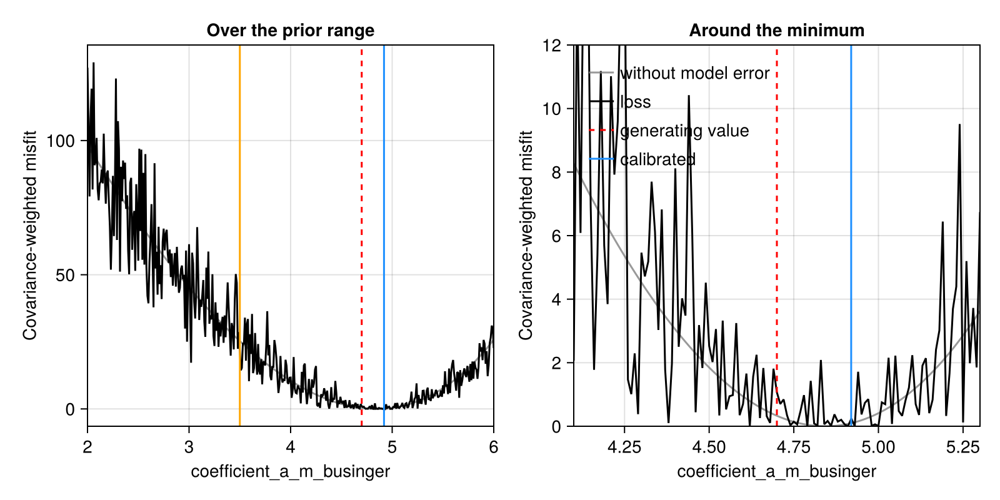

Getting Started
You may find it helpful to read the documentation of EnsembleKalmanProcesses.jl before reading this section.
Every calibration requires
- observational data, which can be a Vector or an
EnsembleKalmanProcess.Observation - a prior parameter distribution. The easiest way to construct a distribution is with the
EnsembleKalmanProcess.constrained_gaussianfunction, - a forward model, which uses input parameters to return diagnostic output
- an observation map, which maps the forward model's diagnostic output to a vector comparable to the observations
Implementing your experiment
All calibrate functions require a backend, an EnsembleKalmanProcesses.EnsembleKalmanProcess object, and a model interface. This tutorial will not go into details on how to construct the EnsembleKalmanProcess object. Please refer to the docs instead.
Backend system
For more information about the backend system, see Backends.
There are three different kind of backends which are JuliaBackend, WorkerBackend, and the HPC cluster backends.
The JuliaBackend is the simplest backend. The work done by each ensemble member is done sequentially.
import ClimaCalibrate
backend = ClimaCalibrate.JuliaBackend()Next, the WorkerBackend is a backend compatible with Distributed.jl. The work done by each ensemble member is done in parallel on different processes. This backend is compatible with the Slurm and PBS job schedulers. It requires starting a job with the resources necessary to start the worker processes. In the example below, worker processes are being launched by addprocs on a HPC cluster that supports Slurm. You would pass backend to the calibrate function.
import ClimaCalibrate
import Distributed
Distributed.addprocs(ClimaCalibrate.SlurmManager())
backend = ClimaCalibrate.WorkerBackend()Finally, the HPCBackend is a backend specific to each HPC cluster. The work done by each ensemble member is done in parallel on different jobs. In the example, each job would start with the directives, modules, and env_vars listed. The job would last for 720 minutes with single task of 12 CPUs and 1 GPU with regular job priority. The climacommon module will be loaded when the job starts and the environment variables for ClimaComms will be set.
import ClimaCalibrate
backend = ClimaCalibrate.DerechoBackend(;
directives = [
:job_priority => "regular",
:time => 720,
:ntasks => 1,
:cpus_per_task => 12,
:gpus_per_task => 1,
],
modules = ["climacommon"],
env_vars = ["CLIMACOMMS_CONTEXT" => "SINGLETON", "CLIMACOMMS_DEVICE" => "CUDA"],
)Model interface
ClimaCalibrate provides the abstract type AbstractModelInterface. For calibration, you will create a struct that will subtype this type and implements the required interface for this function to work.
The necessary functions are
forward_model(interface, iteration, member)which runs the forward model for a single ensemble member.observation_map(interface, iteration)which processes model output and returns a matrix of outputs where each column is the forward model output. This matrix is called theG_ensemblematrix.
If you want to calibrate using one of the HPCBackends, you also need to implement
model_interface_filepath(interface)which returns the path to the file that defines the model interface.
Forward Model
Your forward model must implement the forward_model(interface, iteration, member) function stub.
Since this function only takes in the iteration and member numbers, there are some hooks to obtain parameters and the output directory:
path_to_ensemble_member(output_dir, iteration, member)returns the ensemble member's output directory, which is where the forward model should write.parameter_path(output_dir, iteration, member)returns the ensemble member's parameter file, which can be read with TOML or passed to ClimaParams.
Put output_dir and anything else the model needs in the fields of your AbstractModelInterface subtype. That object is what gets sent to a worker or serialized into a job script, so anything not in it will not be there when the forward model runs.
Observation map
Observational data generally consists of a vector of observations with length d and the covariance matrix of the observational noise with size d × d.
If you need to stack or sample from observations, EnsembleKalmanProcesses.jl's Observation or ObservationSeries are fully-featured.
For preprocessing observational data, you want to preprocess for NaNs and regrid and convert units to match the simulation data and vice versa.
If you are using ClimaAnalysis to preprocess the observational data, then you may want to use ObservationRecipe to create observations from OutputVars.
An observation map to process model output and return the full ensemble's observations is also required.
This is provided by implementing the function stub observation_map(interface, iteration). This function needs to return a Matrix where the ith column is the ith ensemble member's observational output. This matrix is called the G ensemble matrix.
Here is a simple template for the observation_map:
function ClimaCalibrate.observation_map(interface, iteration)
# This assumes the output_dir is a field of interface
(; output_dir) = interface
ekp = ClimaCalibrate.load_ekp_struct(output_dir, iteration)
ensemble_size = EKP.get_N_ens(ekp)
G_ensemble = ClimaCalibrate.g_ens_matrix(ekp)
for member in 1:ensemble_size
G_ensemble[:, member] = process_member_data(iteration, member)
end
return G_ensemble
endNote that each column of the G ensemble matrix should match with the observations. A common source of error is that the ordering of the variables in the observations is not the same as the ordering of the variables for the columns of the G ensemble matrix.
If you are using ObservationRecipe to construct your observations and are using ClimaAnalysis to postprocess your simulation output, then you might want to use GEnsembleBuilder which simplifies the construction of the G ensemble matrix.
Optional postprocessing
If the interface and the iteration are not enough to determine the G ensemble matrix, implement postprocess_g_ensemble as shown below. It gives you the ekp object, the prior, and the output directory, so you can process the matrix further using information that observation_map does not have access to.
function ClimaCalibrate.postprocess_g_ensemble(
interface,
ekp,
g_ensemble,
prior,
output_dir,
iteration
)
return g_ensemble
endAfter each evaluation of the observation map and before updating the ensemble, it may be helpful to print the errors from the ekp object or plot G_ensemble. This can be done by implementing the analyze_iteration as shown below.
function ClimaCalibrate.analyze_iteration(
interface,
ekp,
g_ensemble,
prior,
output_dir,
iteration,
)
@info "Analyzing iteration"
@info "Iteration $iteration"
@info "Current mean parameter: $(EnsembleKalmanProcesses.get_ϕ_mean_final(prior, ekp))"
@info "g_ensemble: $g_ensemble"
@info "output_dir: $output_dir"
return nothing
endParameters
Every parameter that is being calibrated requires a prior distribution to sample from.
EnsembleKalmanProcesses.jl's constrained_gaussian provides a user-friendly way to construct Gaussian distributions.
Multiple distributions can be combined using combine_distributions(vec_of_distributions).
For more information, see the EKP documentation for prior distributions.
Experiment Configuration
A calibration consists of m ensemble members that run for n iterations. The recommended ensemble size is a function of the chosen method and the number of parameters being calibrated. See the EnsembleKalmanProcesses.jl documentation for more information for choosing the appropriate ensemble size.
Calibrate
Now all of the pieces should be in place:
- forward map
- observation map
- observations
- covariance matrix of the observations (noise)
- prior distribution
- ensemble size
- number of iterations
Lastly, you need to set the output directory and the number of iterations to run for.
n_iterations = 7
output_dir = "output/my_experiment"Once all of this has been set up, you can put it all together using the calibrate function:
# Construct the EnsembleKalmanProcess object as ekp
ClimaCalibrate.calibrate(
backend,
ekp,
interface,
n_iterations,
prior,
output_dir,
)For more information on parallelizing your calibration, see the Backends page.
File structure
For a calibration that ran for a single iteration, the calibration output directory might look like this.
.
├── iteration_001
│ ├── eki_file.jld2
│ ├── G_ensemble.jld2
│ ├── member_001
│ │ ├── checkpoint.txt
│ │ └── parameters.toml
│ ├── member_002
│ │ ├── checkpoint.txt
│ │ └── parameters.toml
│ ├── member_003
│ │ ├── checkpoint.txt
│ │ └── parameters.toml
│ └── prior.jld2
└── iteration_002
├── eki_file.jld2
├── member_001
│ └── parameters.toml
├── member_002
│ └── parameters.toml
└── member_003
└── parameters.tomlEach file in the output directory serves a specific purpose:
eki_file.jld2: The serializedEnsembleKalmanProcessstate saved before the iteration runs. For example,iteration_001/eki_file.jld2holds the state used to generate the parameters for iteration 1.parameters.toml: Each member's sampled parameter values, written before the forward model runs. Load this via TOML or pass it to ClimaParams in yourforward_model.G_ensemble.jld2: The G ensemble matrix produced by the observation map after all forward models in the iteration complete.checkpoint.txt: Records whether a member's forward model hasstartedorcompleted. On a restart, completed members are skipped and the rest are rerun.prior.jld2: The prior distribution, saved once initeration_001.
The JLD2 files can be loaded using JLD2.
To access these paths programmatically:
ekp_path(output_dir, iteration): Path toeki_file.jld2for the given iteration.parameter_path(output_dir, iteration, member): Path to an ensemble member'sparameters.toml.path_to_ensemble_member(output_dir, iteration, member): Path to an ensemble member's output directory.path_to_iteration(output_dir, iteration): Path to an iteration's directory.
Checkpointing
ClimaCalibrate checkpoints each forward model and iteration so that an interrupted calibration can seamlessly pick up where it left off without wasting resources.
If a calibration (run via calibrate) exits after completing an iteration, when it is restarted it will automatically run the next iteration. This is done by checking if the ensemble forward map results file (G_ensemble.jld2) and the EKI file (eki_file.jld2) have been saved.
If a calibration is interrupted during forward model execution, causing a partial iteration, incomplete forward models will be rerun when the calibration is restarted. Completed forward models will not be rerun. This is done by checking each model's checkpoint file and the flag it contains.
Although the model is checkpointed, this does not mean the forward model will automatically restart. This functionality is delegated to the forward model.
Example Calibrations
The Calibration Tutorial is a complete example that runs locally, and shows the changes needed to run the ensemble on WorkerBackend workers.
Another example experiment lives in the package repo under experiments/surface_fluxes_perfect_model. It uses the SurfaceFluxes.jl package to compute the Monin-Obukhov turbulent surface fluxes for a set of idealized profiles, and calibrates one Businger coefficient, coefficient_a_m_businger, against the profile-averaged friction velocity.
The observation comes from the same model run with its default parameters, which is what makes it a perfect-model calibration. It carries a 2% error. The model carries another 2%, standing in for the internal variability that makes a climate model return a different statistic on every run, and the calibration is given the two together as its noise covariance. The prior is centered at 3.5, while the observation was generated with 4.7, so the ensemble starts somewhere it has to travel from.
One observable constrains one parameter. coefficient_a_h_businger moves the friction velocity in almost the same direction as coefficient_a_m_businger, so a single number cannot tell the two apart, and calibrating both would leave the ensemble free to slide along that ridge. Separating them takes a second observable that responds to the heat flux.
It calibrates with unscented Kalman inversion, which places its members on a quadrature stencil around the current mean rather than drawing them at random. One parameter therefore needs three members, and the whole calibration costs three forward model runs per iteration. The error falls from 20 to below 1 and the mean parameter climbs from 3.5 to within 0.2 of the 4.7 the observation was generated with, which is as close as the noise allows. The scheduler stops the run once the misfit reaches the size of the noise, usually a few iterations short of the ten requested. An unscented ensemble does not collapse: the stencil narrows onto the posterior covariance and holds there, still spanning 4.7, which is the statement of how well one noisy observation pins the parameter down.
This example runs on the most common backend, the JuliaBackend, with the following script:
import ClimaCalibrate
import EnsembleKalmanProcesses as EKP
include(joinpath(pkgdir(ClimaCalibrate), "experiments", "surface_fluxes_perfect_model", "utils.jl"))
@show ensemble_size n_iterations observation variance prior
# Unscented Kalman inversion places its members on a quadrature stencil, so it
# builds its own ensemble from the prior
ekp = EKP.EnsembleKalmanProcess(observation, variance, EKP.Unscented(prior))
output_dir = "my_experiment"
mkpath(output_dir)
eki = ClimaCalibrate.calibrate(
JuliaBackend(),
ekp,
SurfaceFluxModelInterface(output_dir, ensemble_size),
n_iterations,
prior,
output_dir,
)
theta_star_vec = (; coefficient_a_m_businger = 4.7)
convergence_plot(
eki,
prior,
theta_star_vec,
["coefficient_a_m_businger"],
output_dir,
)
g_vs_iter_plot(eki, output_dir)
loss_landscape_plot(
observation,
variance,
output_dir;
calibrated = only(EKP.get_ϕ_mean_final(prior, eki)),
)convergence_plot shows the error, the spread, and the three members of the stencil in unconstrained and constrained space. The dashed line marks the 4.7 the observation was generated with, which the stencil still spans at the end. Both figures are generated when these docs are built, so they show what the code on this page does:

g_vs_iter_plot shows what each member's forward model returns. The red line is the observation the calibration fits, and the blue line is what the model returns at the parameter the observation was generated with. The gap between them is the error the observation carries:

loss_landscape_plot sweeps the parameter and plots the loss the calibration is descending, the covariance-weighted misfit that EKP.get_error reports. The grey curve is the loss a model without internal variability would present, and the black curve is the one this calibration sees:

The model error turns a smooth bowl into a landscape whose local minima are everywhere, and a method that followed the local slope would stop at whichever one it started nearest. An ensemble Kalman method does not follow the slope. It fits a linear map between the parameters and the model output over the whole ensemble, so the model error, which is uncorrelated between members, averages out of that fit, and the update follows the shape of the underlying bowl. What it recovers is the minimum to within the noise: the ensemble settles about 0.2 from the generating value, which is the width the noise leaves in the parameter, and reports a posterior spread of about that size rather than collapsing onto one of the local minima. The error also stops falling monotonically, since each iteration lands on a different draw of the model error.